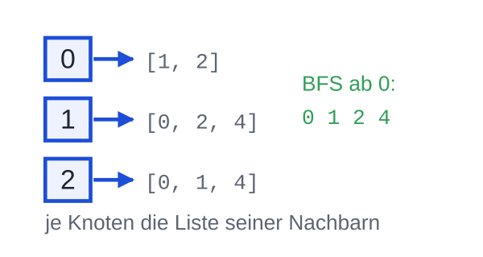

In dieser Implementierung stellen wir den Graphen als Liste von Listen dar: Jeder Index der Hauptliste steht für einen Knoten (0, 1, 2, …), die zugehörige Unterliste enthält seine Nachbarknoten. Das ist eine Adjazenzliste (siehe 3.7).
Diese Seite ist ein Lernpfad in vier kurzen Schritten. Jeder Schritt hat dieselbe Form: Erst liest du kurz, worum es geht, dann zeigt dir ein Video (1–2 min, ohne Ton) die Idee oder den Code in Thonny, dann prüfst du mit einer kleinen Frage, ob du es verstanden hast. Halte die Videos ruhig an und tippe in Thonny mit.
Graph und add_edgebfs in Thonny – danach Aufgabe 3.8.2bfs Schritt für Schritt im Speicherbild – danach Aufgabe 3.8.3Zum Mittippen: 3_graphen/graph.py – neu anlegen, weiter in den Aufgaben 3.8.3 und 3.8.6.
Commit nach jedem Schritt mit Code, z. B. 3.8 Schritt 1: Graph mit add_edge · 3.8 Schritt 3: bfs ergänzt, Beispiel ok (Regeln auf Seite 3.0.2)
Am Ende findest du ein weiterführendes Beispiel (kürzester Weg mit BFS), den Praxisbezug und alle Aufgaben.
Graph und add_edgeDie Knoten heißen hier einfach 0, 1, 2, …; deshalb reicht eine Liste von Listen: self.graph[u] ist die Nachbarliste von Knoten u. Im Video legst du einen Graphen mit 5 Knoten an und trägst Kante für Kante ein. Achte darauf, dass jede ungerichtete Kante in zwei Nachbarlisten landet und in welcher Reihenfolge die Nachbarn in einer Liste stehen.
Graph und add_edge (ca. 2 min) – Die Videos haben keinen Ton, alles Wichtige steht im Untertitel.Jetzt du – mittippen: Lege 3_graphen/graph.py an und tippe den Code aus dem Video ab: die Klasse Graph und die Methode add_edge. Starte mit F5 und probiere in der Kommandozeile aus: g = Graph(5) · g.add_edge(0, 1). Danach committen, z. B. 3.8 Schritt 1: Graph, add_edge angelegt.
Was steht in g.graph nach g = Graph(3), g.add_edge(0, 2) und g.add_edge(2, 1)? Warum wäre [[]] * 3 statt der Komprehension keine gute Idee? (Probiere es aus: a = [[]] * 3, a[0].append(1), a.)
[[2], [2], [0, 1]]. [[]] * 3 enthält dreimal dieselbe Liste: Nach a[0].append(1) ist a gleich [[1], [1], [1]]. Die Komprehension erzeugt für jeden Knoten eine eigene Liste.
Zum Nachlesen: Matrix und Liste im Vergleich.
| Adjazenzmatrix | Adjazenzliste | |
|---|---|---|
| Speicherbedarf | n² Einträge, unabhängig von der Kantenzahl | n + Anzahl der Kanten |
| Prüfen, ob Kante u–v existiert | O(1) | O(Grad von u), Nachbarliste durchsuchen |
| Alle Nachbarn von u durchlaufen | O(n), ganze Zeile prüfen | O(Grad von u) |
| geeignet für | kleine oder dicht besetzte Graphen | große, dünn besetzte Graphen (z. B. Straßennetze) |

Die Adjazenzliste kann in Python auf zwei Arten gespeichert werden. Beide haben denselben Speicherbedarf von der Größenordnung n + Kanten.
graph[0] = [1, 2]graph["Dresden"] = ["Leipzig", "Chemnitz"]graph["Dresden"]["Leipzig"] = 115.Für Übungen mit nummerierten Knoten reicht die Liste von Listen. In echten Anwendungen mit benannten Knoten wird meist ein Dictionary verwendet.
Weiter mit Schritt 2: Breitensuche Schritt für Schritt →
Die Breitensuche besucht erst alle Nachbarn des Startknotens, dann deren Nachbarn und so weiter – Ebene für Ebene. Entdeckte Knoten warten in einer Schlange (Queue, siehe 3.2): Wer zuerst entdeckt wird, kommt zuerst dran. Achte im Video auf die Farben – rot wird gerade bearbeitet, orange wartet in der Schlange, grün ist fertig – und darauf, wann ein Nachbar übersprungen wird.
Zum Nachlesen derselbe Ablauf als Tabelle:
Ein Graph hat die Nachbarlisten 0: [1, 3] · 1: [0, 2] · 2: [1, 3] · 3: [0, 2]. Führe die Breitensuche ab 0 von Hand aus: Notiere nach jedem Entnehmen die Schlange. In welcher Reihenfolge werden die Knoten besucht?
0 entnommen → Schlange [1, 3]; 1 entnommen → [3, 2]; 3 entnommen → [2] (0 und 2 sind schon entdeckt); 2 entnommen → []. Reihenfolge: 0, 1, 3, 2.
Danach: Aufgabe 3.8.1 – Breitensuche von Hand im Beispielgraphen.
Weiter mit Schritt 3: Die Methode bfs in Thonny →
bfs in ThonnyIm Code braucht die Breitensuche drei Dinge: eine Liste visited (schon entdeckt?), die Schlange queue und die Liste reihenfolge. Im Video tippst du die Methode und probierst [False] * n und die Schlange mit enqueue, dequeue und is_empty in der Kommandozeile aus.
bfs und mit der Queue aus 3.2 (ca. 2 min)Jetzt du – mittippen: Ergänze in 3_graphen/graph.py den Code aus dem Video: die Methode bfs. Starte mit F5 und vergleiche die Ausgabe mit dem Video. Danach committen, z. B. 3.8 Schritt 3: bfs ergänzt.
Zum Nachlesen der vollständige Code:
Für die Breitensuche verwenden wir die Schlange Queue aus Seite 3.2: enqueue stellt hinten an, dequeue nimmt vorn heraus, is_empty prüft, ob noch jemand wartet – alles in O(1). Lege dazu deine Datei queue_knoten.py aus 1_listen in den Ordner 3_graphen (oder lade sie herunter: queue_knoten.py). Stehen in deiner Datei unten noch Testzeilen, müssen sie unter if __name__ == "__main__": stehen – sonst laufen sie bei jedem import mit (Abschnitt „import“ auf Seite 3.2). Warum keine einfache Liste? Das zeigt der Vergleich unter Beispiel 2.
from queue_knoten import Queue # Schlange aus Seite 3.2
class Graph:
def __init__(self, size):
# Graph mit size Knoten (0 bis size-1) als Adjazenzliste
self.size = size
self.graph = []
for i in range(size):
self.graph.append([])
def add_edge(self, u, v):
# ungerichteter Graph: Kante in beide Richtungen eintragen
self.graph[u].append(v)
self.graph[v].append(u)
def bfs(self, start):
# Breitensuche vom Startknoten aus; gibt die Besuchsreihenfolge zurück
visited = [False] * self.size
queue = Queue()
queue.enqueue(start)
visited[start] = True
reihenfolge = []
while not queue.is_empty():
current = queue.dequeue() # vorderstes Element entnehmen
reihenfolge.append(current)
for neighbor in self.graph[current]:
if not visited[neighbor]: # noch nicht entdeckt
visited[neighbor] = True
queue.enqueue(neighbor)
return reihenfolge
# Beispiel der Verwendung
g = Graph(5)
g.add_edge(0, 1)
g.add_edge(0, 2)
g.add_edge(1, 2)
g.add_edge(2, 4)
g.add_edge(1, 4)
print(g.bfs(0)) # [0, 1, 2, 4] – Knoten 3 ist nicht erreichbarWas gibt dieses Programmstück aus? Welches Element steht danach vorn, welches hinten?
q = Queue()
q.enqueue(5)
q.enqueue(7)
q.enqueue(9)
print(q.dequeue(), q.peek())5 7 – die 5 kam zuerst und wird mit dequeue vorn entnommen. Danach steht die 7 vorn; peek zeigt sie, ohne sie zu entfernen. Hinten (zuletzt mit enqueue angestellt) steht die 9.
Danach: Aufgabe 3.8.2 – dieselbe Klasse mit einem Dictionary und Städtenamen.
Weiter mit Schritt 4: bfs Schritt für Schritt →
bfs Schritt für Schritt im SpeicherbildJetzt läuft g.bfs(0) Zeile für Zeile. Rechts siehst du visited, die Schlange queue, reihenfolge und den gerade bearbeiteten Knoten current. Achte darauf, dass ein Knoten schon beim Einreihen als besucht markiert wird – und warum die Schleife endet.
bfs Schritt für Schritt (ca. 1,5 min)Jemand setzt visited[...] = True erst direkt nach current = queue.dequeue() (für current) und nicht mehr beim Einreihen der Nachbarn. Was passiert dann bei g.bfs(0) im Beispielgraphen? Verfolge die Schlange zwei, drei Runden lang.
Knoten kommen mehrfach in die Schlange: Nach 0 ist sie [1, 2], nach 1 schon [2, 2, 4], weil 2 noch nicht markiert ist. Die Reihenfolge wird [0, 1, 2, 2, 4, 4, 4] – Knoten werden mehrfach besucht. Wer beim Einreihen markiert, stellt jeden Knoten nur einmal an.
Danach: Aufgabe 3.8.3 – eine rekursive Tiefensuche im Vergleich.
Weil die Breitensuche Ebene für Ebene vorgeht, kann man mit ihr den Weg mit den wenigsten Kanten finden. Dazu merkt man sich zu jedem Knoten, von wo aus er entdeckt wurde.
Bis vor Kurzem stand in bfs eine Python-Liste als Schlange. Jetzt nehmen wir die Queue aus Seite 3.2. Beide Fassungen liefern dieselbe Reihenfolge – der Unterschied liegt in der Laufzeit.
Fassung mit Liste:
def bfs_liste(self, start):
visited = [False] * self.size
queue = [start]
visited[start] = True
reihenfolge = []
while len(queue) > 0:
current = queue.pop(0) # vorn entnehmen: alle anderen rücken nach
reihenfolge.append(current)
for neighbor in self.graph[current]:
if not visited[neighbor]:
visited[neighbor] = True
queue.append(neighbor)
return reihenfolgeListe mit append und pop(0) | Queue aus 3.2 (enqueue, dequeue) | |
|---|---|---|
| Laufzeit je Entnahme | O(n): Alle übrigen Einträge rücken eine Stelle nach vorn. | O(1): Nur __head wird umgesetzt. |
| ganze Breitensuche | bis O(Knoten²), wenn die Schlange lang wird | O(Knoten + Kanten) |
| Aufwand | keine Zusatzdatei, sofort hingeschrieben – auch auf Papier | braucht queue_knoten.py im Ordner und eine Import-Zeile |
| Lesbarkeit | Man muss wissen, dass pop(0) „vorn“ bedeutet. | Die Namen sagen, was passiert: hinten anstellen, vorn entnehmen. |
| Fehlerquelle | Wer versehentlich pop() schreibt, hat einen Stapel (Aufgabe 3.8.5). | Es gibt nur die Operationen einer Schlange (Kapselung). |
| im Debugger | Der ganze Inhalt ist auf einen Blick sichtbar. | Man sieht nur ein Queue-Objekt; den Inhalt erreicht man über __head und next. |
| kleine Graphen | oft sogar schneller (das Nachrücken läuft intern in C) | etwas langsamer, weil jeder Knoten ein eigenes Objekt ist |
Fazit: Für kleine Beispiele ist die Liste bequem. Die Aussage „Laufzeit O(Knoten + Kanten)“ stimmt aber nur mit einer Schlange, die vorn in O(1) entnimmt – also mit der Queue aus 3.2. In der Praxis nimmt man in Python dafür collections.deque (siehe 3.2).
pop(0) im Stern? AFB IIEin Graph hat 10 001 Knoten: Knoten 0 ist mit allen anderen verbunden, sonst gibt es keine Kanten. Wie viele Elemente rücken bei bfs_liste(0) insgesamt nach? Und bei bfs mit der Queue?
Nach Knoten 0 stehen 10 000 Knoten in der Schlange. Jedes pop(0) lässt die übrigen nachrücken: 9 999 + 9 998 + … + 1 + 0 = 9 999 · 10 000 / 2, also rund 50 Millionen Verschiebungen – O(Knoten²). Mit der Queue rückt nichts nach: 10 001-mal dequeue in O(1), dazu 20 000 Nachbar-Einträge – O(Knoten + Kanten).
Alltag: „Kontakte zweiten Grades“ in beruflichen Netzwerken wie LinkedIn sind genau die Knoten, die eine Breitensuche in der zweiten Ebene findet. Auch das „Füllen“-Werkzeug in Malprogrammen breitet sich per BFS über benachbarte Pixel aus.
Beruf: Netzwerktechnikerinnen und -techniker nutzen Breitensuche, um herauszufinden, welche Geräte nach dem Ausfall eines Routers noch erreichbar sind. In der Spieleentwicklung finden Figuren auf Rasterkarten mit BFS (oder dem verwandten A*-Algorithmus) ihren Weg.
Eine Adjazenzliste speichert zu jedem Knoten die Liste seiner Nachbarn. Sie braucht Speicher proportional zu Knoten + Kanten und eignet sich besonders für dünn besetzte Graphen. Die Breitensuche (BFS) besucht die Knoten mithilfe einer Schlange Ebene für Ebene; in ungewichteten Graphen findet sie dadurch die Wege mit den wenigsten Kanten. Mit einer Schlange, die vorn in O(1) entnimmt (Queue aus 3.2), ist ihre Laufzeit O(Knoten + Kanten).
Ergänze im Beispielgraphen die Kante 3–4. Führe bfs(3) von Hand aus und notiere nach jedem Schritt den Inhalt der Schlange.
Datei: 3_graphen/namens_graph.py – neu anlegen; Vorlage ist deine Klasse aus graph.py
Commits: wenn es läuft: 3.8.2: Graph mit Dictionary und Namen, bfs ab Dresden
Schreibe die Klasse so um, dass sie ein Dictionary verwendet und die Knoten Namen tragen (z. B. Städte). Teste mit Dresden–Leipzig, Dresden–Chemnitz, Chemnitz–Zwickau, Leipzig–Halle und führe eine Breitensuche ab Dresden durch.